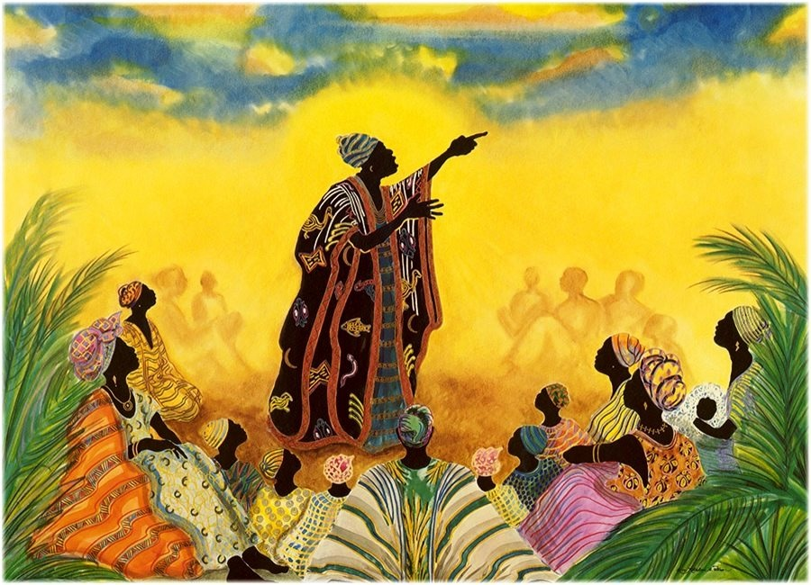

Hey everyone! Welcome to my inner thought muah ha ha. I've always had alot of thought and alot of strong opinions, so here goes nothing. I think many people in this generation underestimate the power of their thoughts and the power of sharing their thoughts. I'm not talking about the people who overshare on instagram and tiktok (this post is not for yall), but rather I am talking about those of us who get annoyed when we see uncles gathered around drinking attaya and talking about the lastest political news back home. I'm talking to those of us who hate seeing the aunties gather together because we do it'll be a whole lotta chit chat about nothing. I'm talking to those of us who no longer find joy in seeing the jalis at every event.
Unfortuneately, we are often hyperfocused on maximization and optimization. Always trying to make the next dolloar. Always trying to make the next job promotion. Always trying to come up with the next big patent. We figure, if it doesn't maximize profit or optimize production, then it must not be worth our time.
I might just be yapping here but what if... the sky isn't falling. What if the weight of the world isn't on our shoulders alone. As our uncles sit and drink attaya, do we realize how many of them witnessed the decolinazation of their lands? Do we realize that they saw dictators rise and fall. Do we realize that they've seen their family members be wisked away simply because they spoke out against the government. Making and serving attay can take HOURS. Maybe, just maybe, these few hours of discussion while drinking a potent green tea that aides in digestion, weight loss, and diabetes managemnt, is their way of avenging their uncles who weren't able to speak up out of fear of imprisonment.
Alhamdulilah for the education I have today as a young woman of African descent. While representation is increasing, many of our mothers and even more of our grandmothers never even came close to this kind of education. My grandmother never attended formal education (I used to help her practice how to write her name when I was 7) yet she complains about micro-organisms when we leave food out for too long, knows every detail of every CNN headline, can tell you more about American politics than the average natural-born American, and can shop in every currency in the world. Without schooling, without formal education, how did she become so knowledgeable? Through conversation. Through dialogue. Through learning when it was okay to take a step back from her nornam activites to listen to those around her. Yes, our aunties can definitely overtalk, but for many of them, the hours and hours that they spend on Whatsapp is the only way for them to learn about what's going on in the world and to gain some intellectual autonomy.
Jaliya or griots, are an important part of West African culture. A jali is essentially a storyteller, historian, musician, poet, or praisesinger. Every family is assigned a jali who knows and recites their family history. As many West African tribes do not have written languages, jalis are essential in the preservation of our history. Nowadays, it does become frustrating when jalis are demanding money before, during, and after their performances, but that's no reason for our generation to lose ties with this ancient part of our culture. Without jalis, most of us wouldn't know where we came from and certainly wouldn't know where we are going.
I say all this to say that dialogue and conversation are important. It is through our conversations that we learn to be human, learn about humans, and learn humanity. It doesn't matter if you aren't discussing how to make a million dollars or if you're debating a hot political topic. What matters is that we keep ideas circulating throughout the world because you never know how much someone could learn from you or how liberated one can feel by pouring out whatever's on their mind. Now, the style in which we converse is important. To engage in truth, to talk with humility and kindness, and to conduct ourselves in a respectful way are always things to keep in mind. Here's to me and my fellow yappers. May our yap sessions continue to tell the stories of generations for generations to come.
At times I feel like I’m not deserving of what I’ve earned. Like I frauded my way into it. Like I stole it from someone else.
Did I get it because I’m black? A woman? A black woman? I’m a failure so why do I deserve anything in life.
But then I realize
There were other black people who applied and were denied. Other women who applied and were denied. And although often few, there were other black women who applied, and were denied.
Maybe that’s just it. My constant awareness of self and the world is what people see in me and why they push for my success and celebrate my accolades.
“to be relatively conscious is to be in a state of rage almost all of the time” but let me not rage myself. Let me rage the systems that forced me to do the work that got the accolade in the first place. The lack of racial justice. The lack of community. Let me turn that rage into passion, or continue to do so
Maybe I am worthy. Maybe I should be loved. Maybe I should be celebrated. Maybe God never makes mistakes and maybe He didn’t start with me. Alhamdulilah for this journey I’m on. Gracious and humbled, a crown needed not, but it does look good in the photo op
I look to my brother on the right and say assalamu alaikum (peace be upon you) I look to my brother on the left and say wa alaikum assalam (and peace be upon you) But I look to my brother in front of me And see right through him Burma, Syria, Yemen, and Palestine Tamir, Eric, Michael and Freddie
Yes All lives matter All lives have always mattered But we have forgotten those three words And now live in a world where my brother has to hold signs saying his life matters For what
They take the depressed stop letting them be professed so they can be oppressed Put them in a corner Then box them up for life What kind of world do we live in THAT my brother must tell the world HE MATTERS For we have had too many martyrs
Burma, Syria, Yemen, and Palestine Tamir, Eric, Michael and Freddie They say love is stronger than hate But have you heard hate Have you heard it creeping up your front yard Have you heard it grasp you by the neck and never let go Have you smelt it burn down your house
They say love is stronger than hate But is it love that drops bombs Is it love that brands the terrorized as terrorist Is it love that fries the mind Rids all happiness from it So it can never rewind To the glory days
I look to my brother on the right and say assalamu alaikum (peace be upon you) I look to my brother on the left and say wa alaikum assalam (and peace be upon you) But I look to my brother in front of me And see right through him The blood gushing through his face His mother yearning for his smile But that has been lost Lost to the perpetuated lines of guns, violence, and anguish I see right through that